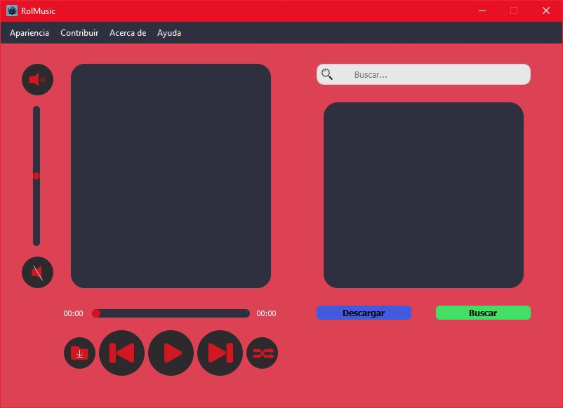
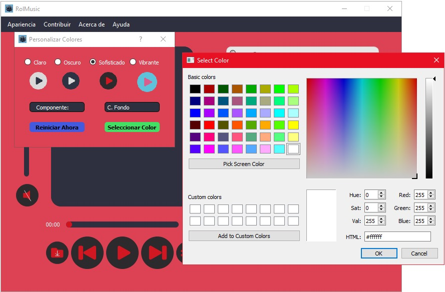
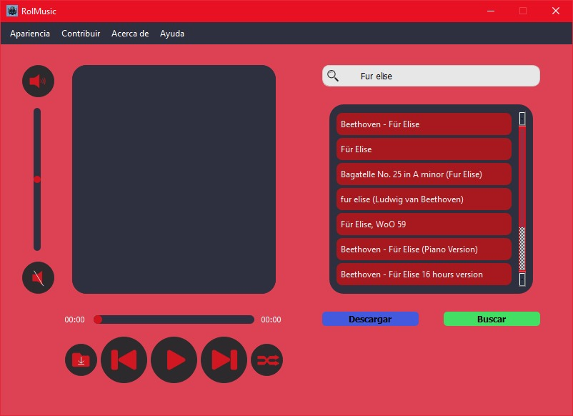

Bienvenido a RolMusic
Tu reproductor de música definitivo con búsqueda y descarga desde YouTube
¿Qué es RolMusic?
RolMusic es un reproductor de música desarrollado en Python que combina un buscador de videos de YouTube, permitiendo descargar los videos en formato MP3 para reproducirlos de forma offline en tu PC. Es una solución gratuita para aquellos que desean disfrutar de su música sin conexión.
Características
- Reproducción de música offline
- Búsqueda y descarga de videos de YouTube en formato MP3
- Interfaz intuitiva y fácil de usar
- Compatibilidad con diferentes formatos de audio
- Gratuito con opción de donaciones
Beneficios para los Usuarios
RolMusic ofrece una solución completa para disfrutar de música offline, sin interrupciones y con la facilidad de obtener tus canciones favoritas directamente desde YouTube. Ideal para usuarios que buscan una herramienta sencilla y efectiva.
Capturas de Pantalla



¡Descarga RolMusic Hoy!
Descargar